Técnicas de análisis IA
Ecoinformática 2014-2015
R. Pérez-Pérez
iEcolab - IISTA - Universidad de Granada
Qué es la IA
Wikipedia
Es un área multidisciplinar que, a través de ciencias como las ciencias de la computación, la lógica y la filosofía, estudia la creación y diseño de entidades capaces de resolver cuesttiones por sí mismas utilizando como paradigma la inteligencia humana.
John McCarthy (1956)
"Es la ciencia e ingenio de hacer máquinas inteligentes, especialemente programas de cómputo inteligentes"
Algoritmos bioinspirados
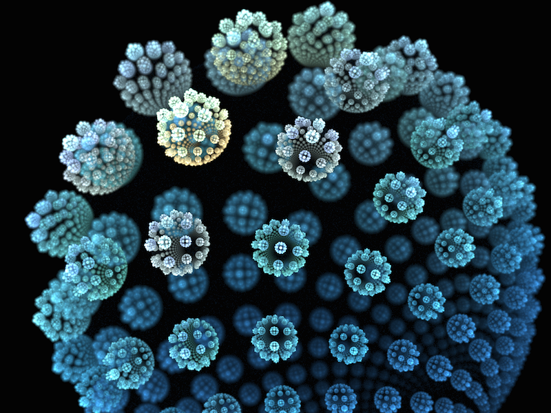
Colonias de Hormigas
Son insectos sociales que viven en colonias y que tienen un comportamiento dirigido al desarrollo de la colonica como un todo, más que a un desarrollo individual
Oscar Cordón
- Expertos en encontrar el camino mínimo entre la comida y el hormiguero!!
- Pero si no ven!!!
Colonias de Hormigas
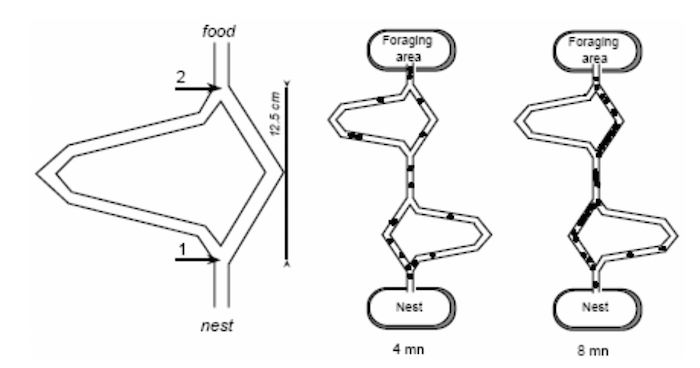
Problema del viajante de comercio


Algoritmos genéticos
Son algoritmos de optimización, búsqueda y aprendizaje inspirados en los procesos de Evolución Natural y Genética
Inicio
tiempo = 0;
inicializar Poblacion(t);
evaluar Poblacion(t);
Mientras (no se cumpla condición de parada) hacer
tiempo = tiempo + 1
seleccionar Poblacion(tiempo) desde Poblacion(tiempo - 1)
recombinar Poblacion(tiempo)
mutacion Poblacion(tiempo)
evaluar Poblacion(tiempo)
fin-mientras
Fin

Redes Neuronales
Es un paradigma de aprendizaje y procesamiento automático ... Sistema de interconexión de neuronas que colaboran entre sí para producir un estímulo de salida

Ejemplos aplicaciones redes neuronales
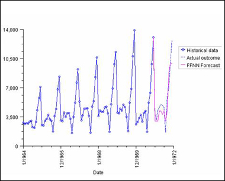

Qué es la minería de datos
Un proceso no trivial de identificación válida, novedosa, potencialmente útil y entendible de patrones comprensibles que se encuentran ocultos en los datos
Fayyad et al., 1996
Qué es la minería de datos
Extracción no trivial de información implícita, previamente desconocida y potencialmente útil, a partir de datos
Hace uso de todas las técnicas que puedan aportar información útil
desde un análisis gráfico, métodos estadísticos, ..., completando con métodos y algorítmos del campo de la Inteligencia Artificial.Tradicionalmente
- Almacenes de datos (datawarehouses)
- Minería de textos (text mining)
- Minería en Internet (web mining)
Ejemplo clásico de minería de datos
(reglas de asociación)
Wal-Mart realizó a finales de los años 90 un análisis de los hábitos de compra de sus clientes. Descubrieron una correlación estadísticamente significativa entre las compras de pañales y cerveza: los viernes por la tarde, los hombres entre 25 y 35 años que compraban cerveza también compraban pañales ...
Fases del cocinado

Pre-procesamiento
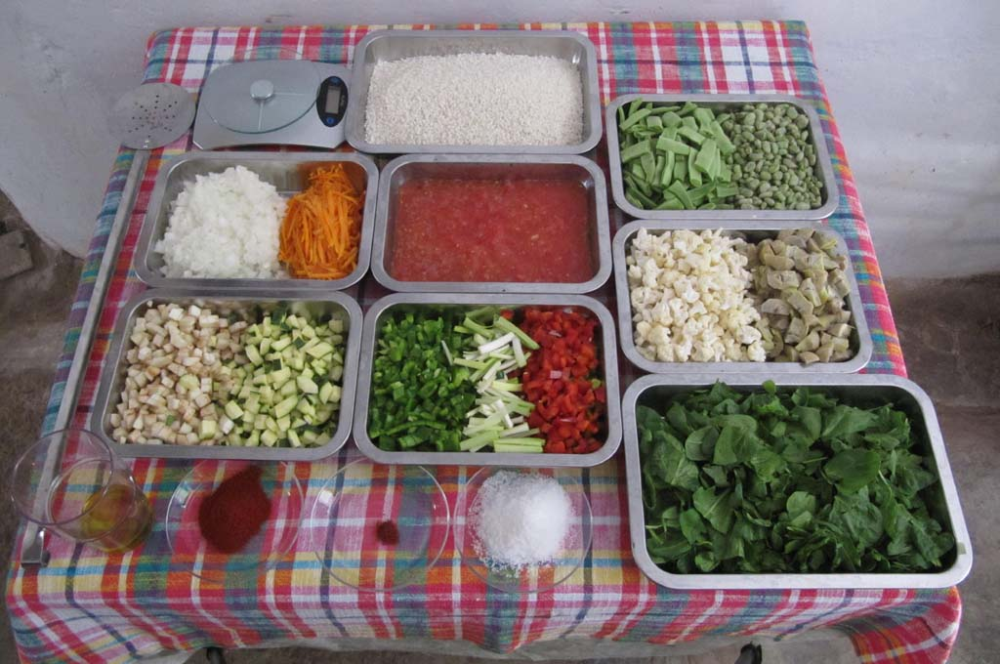
Pre-procesamiento
Integración de Datos
Formatos diferentes, distintos períodos, ... --> Proceso de integración y unificación de conceptosReconocimiento y limpieza de Datos
Reducir el ruido y las inconsistencias, datos nulos, outliers ... --> Tablas de resumen de atributos, resúmenes de estadísticas y diagramas.Selección de Características
- Transformación de Datos
Normalización de los datos, transformación de algunos tipos de atributos, dependiendo del algoritmo que pensemos usar - Reducción de Datos
disminuye el tamaño de los datos, eliminando características redundantes --> Selección/Extracción de atributos, Construcción de nuevos atributos, ...
- Transformación de Datos
Análisis
Post-procesamiento
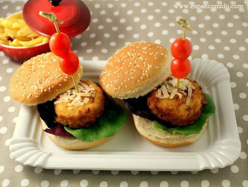
Post-procesamiento
- Filtrado del conocimiento generado
Eliminando información redudante
- Interpretación y explicación
Procesar el conocimiento generado para el usuario final --> visualización, deshacer transformaciones, ...
Algoritmos
Descriptivos
Análisis exploratorio (correlaciones, dependencias, detección datos anómalos, reglas de asociación, ...)Predictivo
Aprendizaje supervisado (clasificación, estimación o regresión)Segmentación
Aprendizaje no supervisado
Aprendizaje supervisado vs no supervisado
- Supervisado
Se provee una respuesta correcta durante su entrenamiento
- No Supervisado
El objetivo a alcanzar no está presente
Árboles de decisión
Técnica de análisis no paramétrica que permite predecir la asignación de muestras a grupos predefinidos en función de una serie de variables predictoras.
- Se pueden usar para clasificación y regresión
- Útiles para la exploración de datos, y cuando hay un número elevado de datos
- De clasificación, cuando la respuesta final es una clase
- De regresión, cuando la respuesta final es un valor
Árboles de clasificación
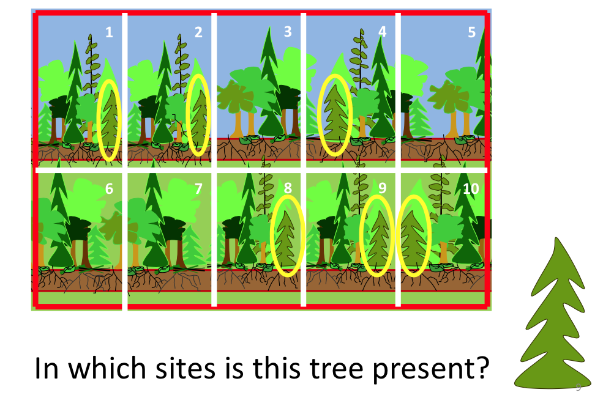
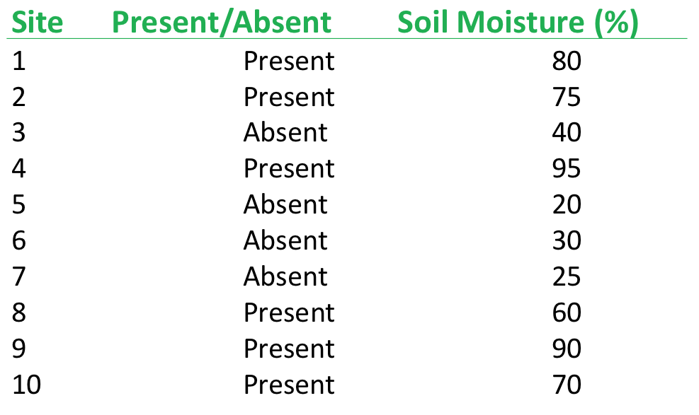
Árboles de clasificación
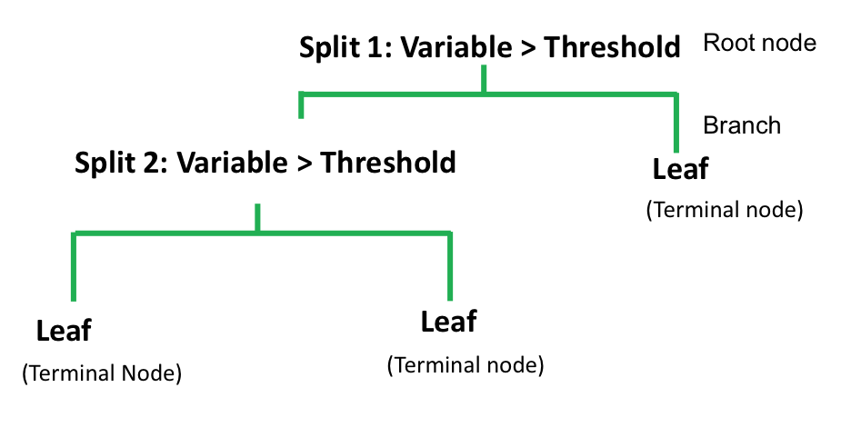
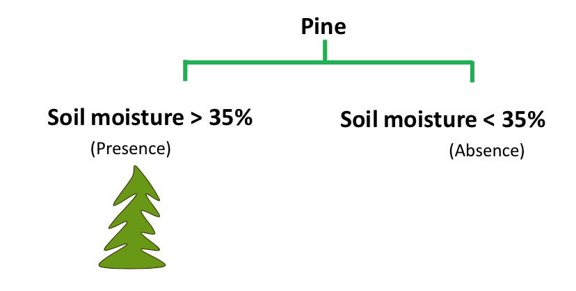
Árboles de regresión
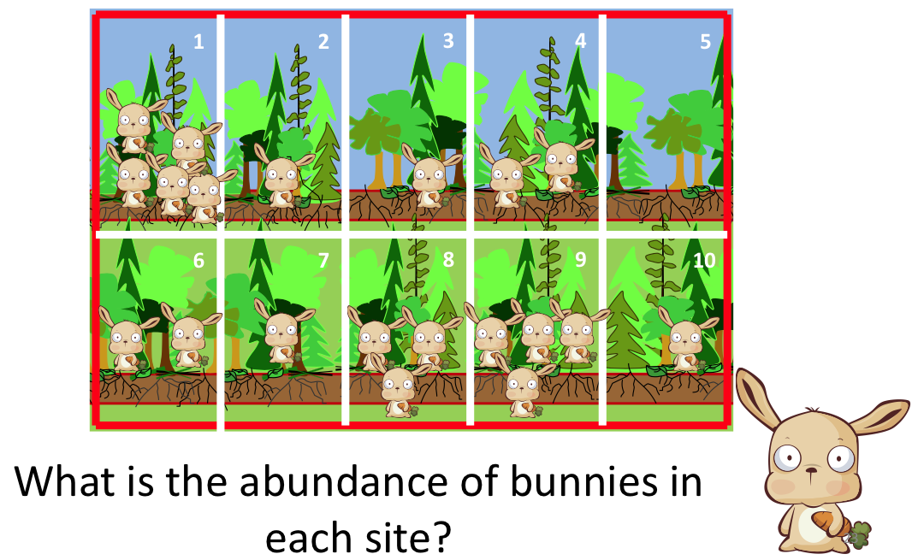
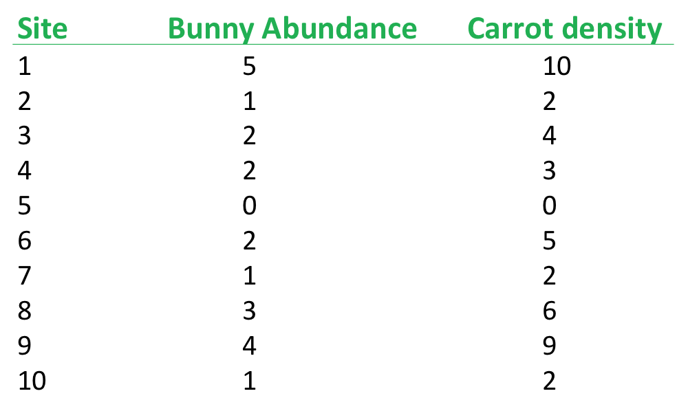
Árboles de regresión
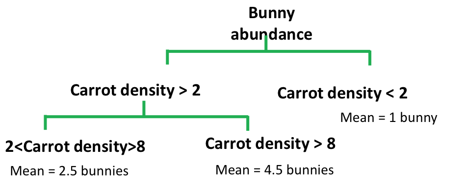
Todos a programar!!!
Vamos a generar un árbol de clasificación de las flores del género Iris.
library(tree)
library(datasets)
iris
iris.tr <- tree(Species ~ ., iris)
iris.tr
summary(iris.tr)
plot(iris.tr)
text(iris.tr)
Resumen del árbol generado
##
## Classification tree:
## tree(formula = Species ~ ., data = iris)
## Variables actually used in tree construction:
## [1] "Petal.Length" "Petal.Width" "Sepal.Length"
## Number of terminal nodes: 6
## Residual mean deviance: 0.1253 = 18.05 / 144
## Misclassification error rate: 0.02667 = 4 / 150
Gráfico del árbol de clasificación

Cluster
Objetivo Agrupar un conjunto de observaciones en un número dado de clusters o grupos.
El agrupamiento se basa en la idea de distancia o similitud en las observaciones.
- Ejemplo: una baraja de cartas españolas
- en cuatro clusters: los cuatro palos
- en ocho: los cuatro palos y según seas figuras o números
- en dos: figuras y números
Distancias formas de medir las distancias
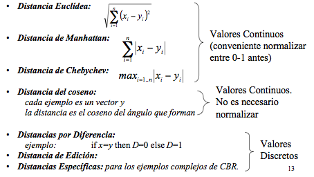
K-medias
Permite asignar a cada observación el cluster que se encuentra más próximo en términos del centroide (media).
1. Se toman al azar K clusters iniciales.
2. Mientras no se cumpla la condición de parada
+ Para el conjunto de observaciones
- Se calculan las distancias a los centroides de los clusters
- Se reasignan a los que estén más próximos.
+ Se re-calculan los centroides de los k clusters
(media de todos los elementos que lo forman)
K-means, ejemplo gráfico

Trabajando con las imágenes de NDVI de la sesión 3
- Cargamos librería raster y obtenemos los ficheros de imágenes para una hora determinada
library(raster)
hora <- "12"
imagenes <- list.files(path="./ndvi", full.names = TRUE,
pattern=paste("_", hora, "..\\.jpg\\.asc$", sep=""))
- Visualizamos una de las imágenes
imagen <- raster(imagenes[[1]])
plot(imagen)
Trabajando con las imágenes de NDVI de la sesión 3
Algo de pre-procesamiento
hist(imagen[])Hacemos un k-means con dos grupos
mi_cluster <- kmeans(imagen[], 2, iter.max = 200, nstart = 3)Creamos una imagen raster con el resultado
cluster_ndvi <- raster(imagen) cluster_ndvi[] <- mi_cluster$cluster plot(cluster_ndvi)
Quieres prácticar?
Un informe (R markdown) con:
- Muestre una de las imágenes
- Muestre una agrupación de los píxeles que permita distinguir al menos: cielo, suelo desnudo, y pinos.
- Pre-procesamiento: usar la imagen resultado de la media de las imágenes de una hora.